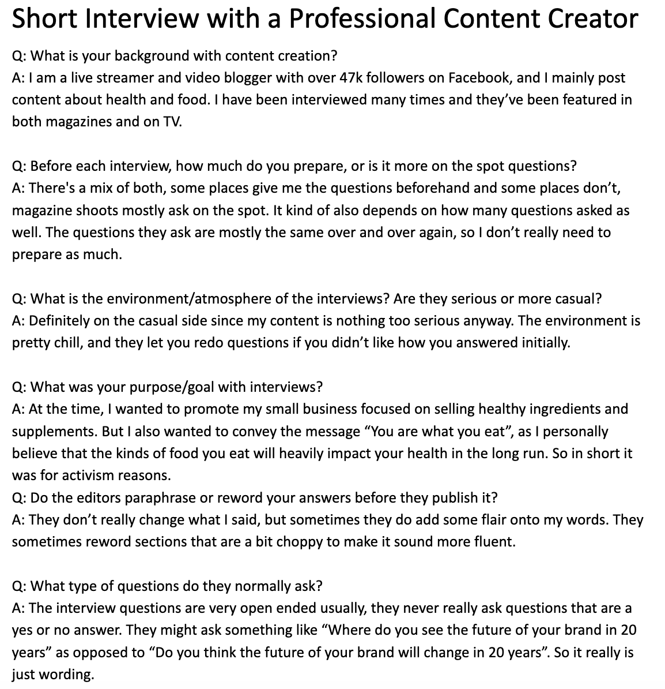
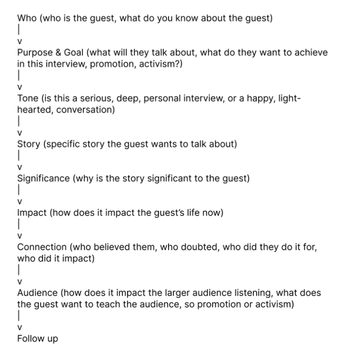
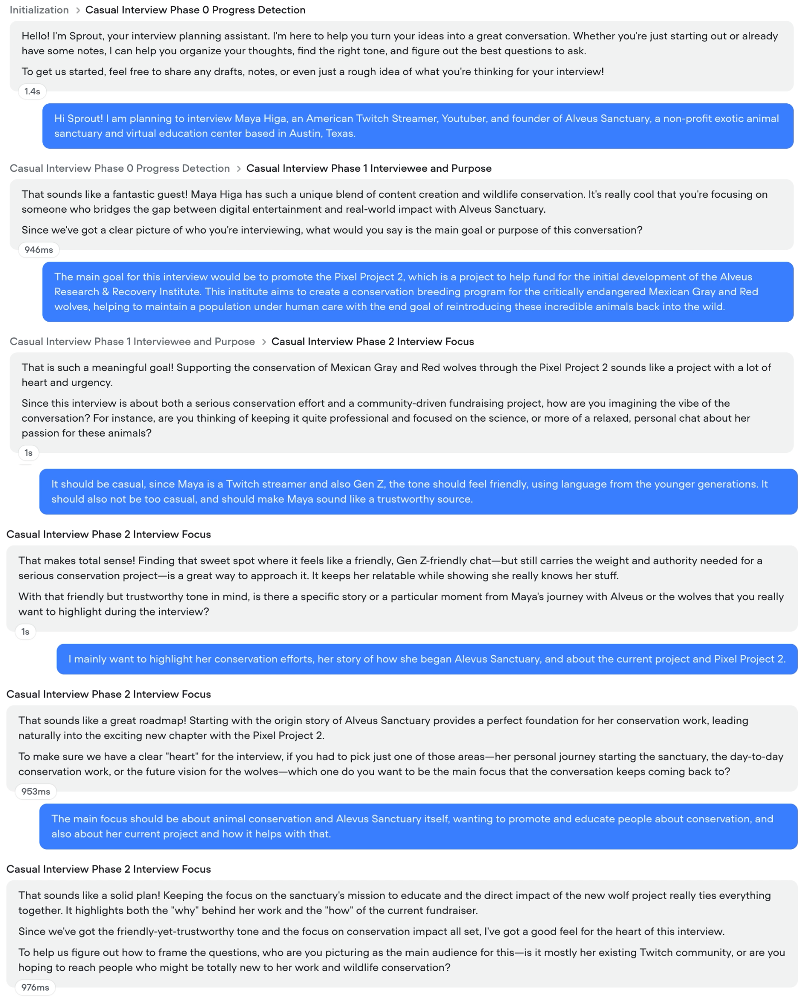
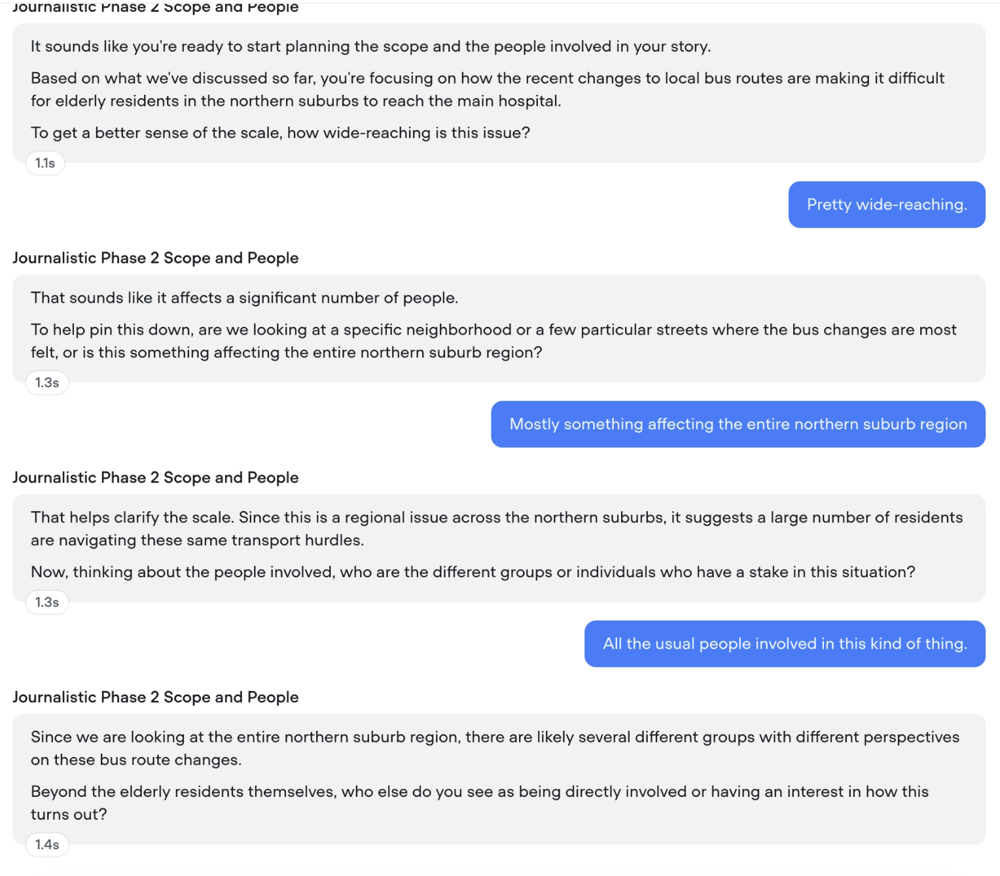
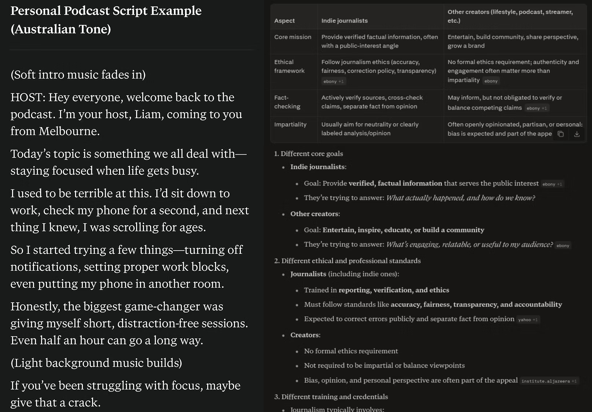

UX Design | 2026 | University Project
Advanced Interface Prototyping challenged me to think beyond present day interface design and explore how emerging technologies can support the future of content creation.
This project is focused on Sprout, an agentic AI chatbot designed to help independent creators transform their brief interview ideas into structured interview plans.
| Role | Tools |
|---|---|
| Prototype Designer | Voiceflow |
| User Tester | |
| Chatbot Tester | |
| Timeline | |
| March - June 2026 |
Independent content creators have limited time and resources to turn their ideas into structured interview plans.

Spoken to content creators to understand the interview planning workflows.

Designed casual conversation flows and storyboards.

Developed happy-path interactions.

Conducted chatbot and error-handling testing.
Rather than use AI as a tool to do all our decision making, I began to see it as a helpful guide to support users while maintaining their agency and critical thinking.

AI was used in the following ways:
| Brainstorming initial interview ideas | Getting initial idea of journalist interviews vs casual interviews |
| Generating different interview structures | Drafting conversation topics for testing |
While designing the AI product itself, we considered:
AI often produced generic interview questions
AI lacked variation that make the interview feel unique, requiring manual refinements
As information by AI could be drawn from large databases of various sources that could also be AI generated, we needed to double check the information given with real journalists and content creators
| Activism Branding | Researching | Flexible Design System |
|---|---|---|
| Branding doesn’t have to be primarily driven by consumption and creating a memorable identity, but can raise awareness and build a community that can help support others. | Researching the affected community and existing initiatives to ensure that the brand would not accidentally reinforce stereotypes and cultural appropriation. | Developing a flexible design system can be adapted to different contexts and audiences, extend across digital and physical media, and remain visually consistent as it evolves over time. |